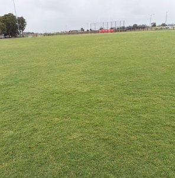

Couch recovery under insect pressure: Casey Fields feedback on ProForce Scarlet Trio
First published by Indigo Specialty Products on 12 March 2026. Read the original post.

Sportsfield managers know the weeks after renovation are when a surface is easiest to set back. The couch is regrowing, fixtures are waiting, and insect damage at that point can undo a lot of work. The feedback below, shared by Indigo Specialty Products, comes from the City of Casey team at Casey Fields.
The customer's words
“Indigo's Scarlet Trio has been an exceptional addition to our insecticide program. Post renovation, and at times under tough mite/fly pressure, it delivers reliable, peace of mind results knowing we are covered, and gives our couch the best chance to bounce back and recover. Low rates and tank mixable with nutrition, I now find our turf is now ready for play and back to the high standard quickly.”
Four things worth noting
- It is used after renovation. That is when couch is rebuilding and has the least room to absorb insect damage.
- It holds up when mites and flies are active. Anthony describes spells of heavy mite and fly pressure and says the product lets him feel the turf is covered.
- It goes out at low rates in the same tank as nutrition. Combining the two can save a separate trip across the field. Confirm tank-mix compatibility on the label first.
- The surface returns to play quickly. He reports the turf is ready for play and back to its usual standard fast.
About ProForce
Scarlet Trio is an insecticide in ProForce, the Australian-manufactured plant protection range Indigo makes for non-crop and specialty markets. These field notes mostly cover HydroForce soil surfactants, so for the rest of the line-up visit the ProForce page on the Indigo website, or call the Rocklea team on 0491 201 694.
More customer experiences are collected on Indigo's testimonials page.
General information only. One customer's results depend on their own site and conditions. Always read and follow the product label.